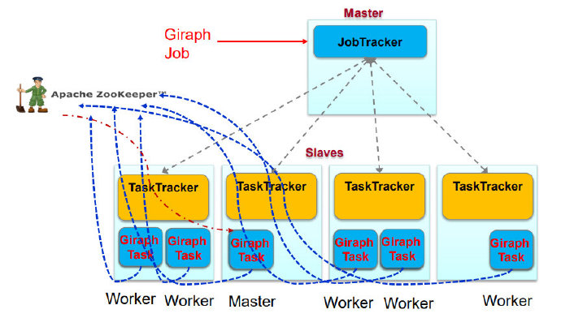

图数据处理简介
图数据的应用
图数据
- 数据本身以图的形式呈现
- 社交网络
- 传染病传播途径
- 交通路网
- 某些非图结构的数据，也可以转换为图模型后进行处理
- 网页链接
- 机器学习训练数据
关联性分析
- 图数据结构表达了数据之间的关联性
- 通过获得数据的关联性，抽取有用的信息
- 购物通过为购物者之间的关系建模，就能很快找到口味相似的用户，并为之推荐商品
- 图在社交网络中，通过传播关系发现意见领袖
图数据处理解决方案
- 使用单机的图算法库
- BGL、LEAD、NetworkX、JDSL、StandfordGraphBase和FGL等
- 如何运行大规模的图？
- 单机算法实现相应的分布式
- 通用性不好，每个算法都需要重写
- 并行图计算系统
- Parallel BGL和CGM Graph，实现了很多并行图算法
- 对大规模分布式系统容错等没有很好的支持
- 基于现有分布式数据处理系统进行图计算
- 使用MapReduce/Spark/FlinkAPI编写图算法
- 编写困难，系统未针对图计算进行优化
图处理系统
图数据库：
- 基于遍历算法的数据存储、用于实时图查询
- Neo4j、OrientDB、DEX和Infinite Graph
图处理系统：
- 以图顶点为中心的计算、用于离线图分析
- 基于消息传递的并行引擎：如GoldenOrb、Pregel/Giraph
- 利用Dataflow系统构建的工具包：MapReduceHama、Spark GraphX、FlinkGelly
Pregel/Giraph系统
计算模型
- 基于BSP模型实现的分布式图处理系统
- 一套可扩展的、有容错机制的平台
- 提供一套灵活的API，描述图计算，比如图遍历、最短路径、PageRank计算等
- 注意，Giraph是利用MapReduce开源框架实现，不是基于MapReduce API计算
图结构
- 顶点
- 顶点ID：唯一标识
- 自定义值：存储顶点的“状态值”
- 例如PageRank、最短路径中的属性值
- 边
- 和其源顶点关联，并记录了其目标顶点ID
- 边上有一个可修改的用户自定义值与之关联
图算法共性
共性：顶点给邻居传递消息，不断进行更新，此过程迭代，直到最终收敛
- 集中式算法：限制参与运算的顶点，例如Dijkstra总是挑最近的顶点加入source
- 分布式算法：所有顶点同时参与运算
BSP模型
- 一系列全局超步（superstep）
- 局部计算：每个参与的处理器独立计算
- 通讯：处理器群相互交换数据
- 栅栏同步(Barrier Synchronization)：等到其他所有处理器完成计算，再继续下一个超步
Vertex-centric计算模型
- “边”并不是核心对象，在边上面不会运行计算，只有顶点才会执行用户自定义函数进行相应计算
- 顶点的状态
- 活跃active：该顶点参与当前的计算
- 非活跃inactive：该顶点不执行计算，除非被其他顶点发来的消息激活
- 当一个非活跃状态的顶点收到来自其他顶点的消息时，Pregel计算框架根据条件判断是否将其显式唤醒进入活跃状态
- 什么时候结束
- 当所有顶点都是非活跃状态的时候
编程模型
- Compute()
- 用户定义的计算函数
- SendMessageTo()
- 消息传递给哪些顶点
- 通常给邻居节点发送
- Combiner
- 将发往同一顶点的多个消息合并成一个消息，减少了传输和缓存的开销
- 与Hadoop中的Combiner作用相同
- Aggregator
- 一种全局通信、监控和数据查看的机制
- 超步S中，每个顶点都可以向某个Aggregator提供数据，Pregel计算框架对这些值进行聚合操作产生一个值
- 超步S+1中，所有顶点都可以看见这个值
- 例如，可以用来求图中边数
- 一种全局通信、监控和数据查看的机制
体系结构
- Master：协调各个Worker执行任务
- Worker：维护图的状态信息，负责计算
- BSP计算模型
- 计算：worker自身
- 通讯：worker之间
- 同步：master
Worker
Worker内部
- 维护图顶点的描述信息
- 一般保存在内存中
- 包括顶点的当前值
- 以该顶点为起点的初射列表，每条出射边包含了目标顶点ID和边的值
- 执行图顶点上的计算：Compute()
- 在每个超步中，Worker会对自己所管辖的分区中的每个顶点进行遍历，并计算
- 管理图顶点的控制信息
- 需要存两份（接收的队列，发送的队列）！
- 输入消息队列：接收到、发送给顶点的消息，
- S已经接收到的消息（来自于S-1），S中需要处理
- S中接收到来自其他Worker的消息，S+1处理
- 标志位：用来标记顶点是否活跃状态
- S中标记顶点是否活跃
- S中记录顶点在S+1是否活跃
Worker之间
- 消息传输：SendMessageTo()
- 发送消息前会首先判断目标顶点U是否位于本地（根据内部描述信息）
- 本地：直接把消息放入到与目标顶点U对应的输入消息队列中
- 远程：暂时缓存消息到本地输出消息队列，当缓存中的消息数目达到阈值时，传输到目标顶点所在的Worker上
- 若存在用户自定义的Combiner操作，则消息被加入到输出队列或者到达输入队列时，就可以对消息执行合并操作
Master
- 维护worker的状态
- 协调worker的计算
- 同步控制：Superstep
- 对外服务
- Master维护的数据信息的大小，只与分区的数量有关，而与顶点和边的数量无关
Master协调计算
在每个SuperStep中需要进行两次同步（双屏障）
- 开始时同步发送相同的指令，等待Worker回应
- 结束后，进行路障Barrier同步，一旦成功Master就会进入下一个超步的执行
MapReduce与Giraph

- Giraph的主从结构在MapReduce中都是Task
- 利用zookeeper选主
- 只利用了MapReduce中的mapper节点，没有Reduce节点
- 只是利用了MapReduce框架Run函数将Giraph启动
工作流程
数据加载
- 基于顶点的图分区
- 哈希函数或者用户自定义函数
- 目标是使得跨界点的通信减少
- 读取数据
- Master只需要知道图的位置
- 将输入的图划分为多个部分，如基于文件边界
- 每个部分都是一系列记录（顶点和边）的集合
- Master会为每个Worker分配一部分图数据
- 将输入的图划分为多个部分，如基于文件边界
- Worker取真正读数据
- 将部分图数据加载到内存
- Master只需要知道图的位置
SuperStep计算
- Worker为管辖的每个分区分配一个线程
- 对于分区中的每个顶点，Worker根据来自上一个超步的、发给该顶点的消息并调用处于“活跃”状态的顶点上的Compute()函数
SuperStep结束
- 在执行计算过程中，顶点可以对外发送消息，但是必须在本超步结束之前完成
- 超步完成后（barrier），Worker把在下一个超步还处于“活跃”状态的顶点数量报告给Master
容错机制
不能使用MapReduce的容错机制
- Master故障
- 意味协调节点丢失
- Zookeeper选主
- Worker故障
- 意味计算节点丢失
- 设置检查点
检查点机制
- 设置检查点：每隔一定的superstep
- 在设置检查点的超步开始时，Master通知所有的Worker把管辖的分区状态（顶点、边、接收到的消息等），写入到持久化存储
- Worker发生故障
- Pregel
- 重新启动一个Worker
- 局部恢复（confined recover）
- 将失效节点从检查点恢复到当前时刻
- Giraph
- Master把失效Worker的分区分配到其他处于正常状态的Worker上
- 全局恢复，所有节点退回到检查点
- Pregel
乐观容错
不一定需要检查点